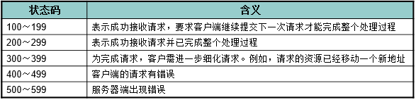

http服务&ajax编程
1. 服务器
通俗的讲，能够提供某种服务的机器（计算机）称为服务器
1.1. 如何理解服务器？
生活中案例：
便利店 <---> 服务器
货架，冰柜，POS机 <---> 服务器软件
卖零食水果，代收快递 ，充值缴费 <---> 服务
相对应的关系：
便利店 <---> 配上货架，冰柜 <---> 卖零食，水果
服务器 <---> 安装服务器软件 <---> 提供服务
编程世界中案例：
服务器 <---> 计算机
服务器软件 <---> 可存储网页软件，收发网页软件
服务 <---> 存放网页，发送网页
便利店要增加新的业务,该如何操作？
1.2 服务器软件
使计算机能提供某种服务的应用软件，称之为服务器软件. 服务器通过安装相应的服务器软件，然后进行配置后就可以对外提供某种服务。
常见的服务器软件有：
- 文件服务器：Server-U、FileZilla、VsFTP等（FTP是File Transfer Protocol文件传输协议）；
- 数据库服务器：oracle、mysql、SQL server、DB2、ACCESS等；
- 邮件服务器：Postfix、Sendmail等；
- HTTP服务器：Apache、Nginx、IIS、Tomcat、NodeJS等；
服务器想要对外提供什么服务，就安装相应的服务器软件。
1.3 服务器类型
按不同的划分标准，服务器可划分为以下类型：
- 按软件功能类型划分： 文件服务器、数据库服务器、邮件服务器、Web服务器等；
- 按安装操作系统划分： Linux服务器、Windows服务器等；
- 按应用软件名称划分： Apache服务器、Nginx 服务器、IIS服务器、Tomcat服务器、 mysql服务器、oracle服务器、 Node服务器等；
本质：无论是按软件功能，还是安装的系统，或名称称呼,服务器的本质就是一台装了某款服务器软件的计算机。
有点类似：
经营类别: 水果便利店，生鲜便利店
店铺名称: 711便利店，喜事多
所属地域: 日本便利店，中国便利店
便利店本质都是提供售货，和一些便民服务。
1.4 HTTP服务器
即网站服务器，主要提供文档(文本、图片、视频、音频)浏览服务，通常会安装Apache、Nginx服务器软件。
HTTP服务器可以结合某一编程语言处理业务逻辑，由此进行的开发，通常称之为服务端开发。
服务端的编程语言包括 php、java、.net、Python、Ruby、Perl等。
服务器总结：
- 服务器就是计算机，通过安装服务器软件，才能向外提供服务。
- 根据服务器软件的功能，名称，安装的系统这些不同的标准，可以划分出不同类型的服务器。
- HTTP服务器主要提供网站浏览服务，可以结合某编程语言进行开发，我们称之为服务器开发。
2、客户端
2.1 如何理解客户端?
- 客户端：电脑，手机，iPad平板安装了客户端软件，可以称之为客户端。
- 客户端：安装客户端软件，索取服务一方（向服务器获取）
- 服务端：安装服务端软件，提供服务一方（向客户端提供）
具有向服务器索取服务能力的终端，如比如 手机、电脑等 安装不同的客户端软件，可以获取不同的服务，比如通过QQ获得即时通讯服务、通过迅雷获得下载服务等。
2.2 索取服务与提供服务理解
QQ聊天案例：
我的手机QQ ---> 编辑消息 ---> 发送 ---> 信息去哪里了?
朋友手机QQ ---> 如何接收消息?
问：为什么可以发消息，可以接收?
问：消息发出去都会去哪里?
2.3 常见的客户端软件：
铁路12306 ---> 订购车票服务
迅雷客户端 ---> 下载小片子
Foxmail ---> 收发邮件
今日头条，百度新闻 ---> 看新闻服务（关心国家大事）。
2.4.客户端如何分类？
- 系统划分：IOS端，安卓端，window
- 设备划分：手机端，电脑端
- 特性划分：浏览器（网页应用），非浏览器（桌面应用）
以浏览器为宿主环境，结合 HTML、CSS、Javascript等技术，而进行的一系列开发，通常称之为前端开发。
2.5 CS/BS软件（了解）
| CS软件 | CS软件 |
|---|---|
| 手机QQ，LOL游戏 , 手机微信 | 网页QQ，新浪网站，网页地图 |
| 1. 需要安装，手机、电脑桌面应用 | 1. 不用安装，运行在浏览器网页应用 |
| 2. 性能更高效，更稳定，使用更流畅 | 2. 性能相对较低，流畅性弱（依赖浏览器） |
| 3. 开发及维护难度增大 | 3. 开发维护相对更快 |
| 4. 兼容各种系统平台 | 4. 兼容浏览器 |
CS 就是（client/server） 客户端+服务器 的应用 BS 就是（browser/server） 浏览器+服务器 的应用( 一种特殊的CS 软件) 小结：CS手机电脑桌面用应，BS浏览器网页应用。
客户端总结：
- 客户端就是手机，iPad平板，电脑，等智能设备，装有了客户端软件，可以获取服务器上的服务。
- 服务器是提供服务一方，客户端是索取服务一方
- 客户端通常按设备，系统划分，把浏览器中网页应用单独划分，则有了BS/CS应用之分。
- 我们做的都是浏览器网页应用,都是BS架构.
- 以浏览器为宿主环境,使用html,css,js技术的开发称为前端开发，需要后台开发人员配合。
3、网络基础 IP , 域名 , 端口, DNS服务.
问: 网络上的电脑又是如何沟通交流的?
3.1 如何理解这些概念？
生活中案例：
问题: 我要找好日子便利店拿快递, 但我不知道详细地址怎么办？
店铺详细地址：北京市昌平区天安门路100号A003铺位（IP地址）
店铺名称：天安门好日子便利店（域名）
店铺业务：卖零食,收快递（端口）
方案:
1. 把店名和地址对应：问自己的家人 ---> 再问外面的人（DNS寻址）
2. 拿快递（获取服务）
3.2 IP地址
IP地址: 每个连接在互联网上的电脑主机在网络上的唯一标识（身份证，手机电话号码）
形式: 一个32位地址(192.168.10.100) 查看本机IP地址: ipconfig、ifconfig（linux,mac） 查看网站IP地址: ping www.baidu.com
3.3 域名
由于IP地址基于数字，不方便记忆，于是便用域名来代替IP地址，域名是一个IP地址的“面具”
形式: www.baidu.com 查看域名对应的IP地址: ping www.baidu.com
3.4 DNS服务
DNS（Domain Name System）网上作为域名和IP地址相互映射的一个分布式数据库， 它能够使用户更方便的通过域名形式访问网站。
DNS服务器: 简单的说就是指记录IP地址和域名之间对应关系的服务器电脑。 DNS寻址:先找本机hosts文件、再找DNS服务器( 专干对应域名IP的活 ) 刷新DNS： ipconfig /flushdns
3.5 端口
端口号是计算机与外界通讯交流的出口，每个端口对应不同的服务。
查看端口占用情况： netstat -an 常见端口号 80、8080、3306、21、22
4 搭建WEB服务器
问: 要搭建一个网站服务器,需要安装哪些服务器软件呢?
4.1 什么是集成环境软件？
360一键安装包 : 360浏览器 + 360杀毒 + 360软件管家 + 360手机助手
phpStudy集成软件: { windows } + Apache + Mysql + PHP
4.2 安装phpStudy
- 双击解压即可安装(非中文路径)。
- 建议安装在D盘
4.3 管理HTTP服务
- 任务图标绿色为正常启动状态,红色为失败
- 通过图形控制台可以 启动、重启、停止所有服务
4.4 访问网站根目录
- 服务器软件安装后，输入ip地址（或者回环IP地址：127.0.0.1）。
- 默认会打开 WWW 目录，该目录为根目录
- 如果文件夹中，有index.html 或 index.php文件，会被默认打开。
访问注意事项：
- 检查网络是不是通的 ping 对方IP
- 检查防火墙是否开启，如果开启将不能正常被访问
- 理解默认索引
- 确保端口没有被其它程序占用
- 修改配置要格外小心，禁止无意修改其它内容
4.5 更改网站内容
- 将我们制作好的网页拷贝到配置好的根目录下
- 浏览器访问127.0.0.1即可。
4.8 更改默认打开首页
步骤1：phpstudy其他选项设置
步骤2：phpstudy设置 ----> 端口常规设置
当进入网站时，默认会寻找目录中的index.html ，index.php , index.htm文件 我们把index.php文件排在最前面，就可以优先找到index.php文件，因为我们下午就要学习php开发。
4.6 多个域名网站配置
步骤1：phpstudy其他选项设置
步骤2：phpstudy其他选项设置 ----> 站点和域名管理

步骤3：phpstudy 其他选项设置 ---->打开host文件
注意：如果修改host文件,出现权限问题。则找到 C:\Windows\System32\drivers\etc 文件夹中将host文件拷贝到桌面修改。然后再粘贴回去
把域名和ip地址对应,就可以访问了（以后浏览器，看到这个网址代表的就会找这个IP的电脑）
注意:配置的网站目录里,如果项目中没index.html或index.php文件则会显示Forbidden 拒绝访问
4.7 开放目录形式访问权限
注意：当网站设置了域名后（为了安全性），phpstudy默认会关闭目录形式的访问(没有index文件，不显示目录,会显示发下画面) 为了开发调式方便，我们可以自己打开目录形式的访问。
步骤1： phpstudy其他选项设置--->phpstudy设置---->允许目录列表（勾选）
步骤2： phpstudy其他选项设置--->打开配置文件---> vhosts-conf
步骤3：更改options 配置
修改如下：
如配有多个网站则逐一修改即可。
修改完成，重启phpstudy软件，则可以显示网站的目录
5 PHP基础
学习目标：
1. 基础的语法,变量,数据类型，数组使用，分支循环语句。
2. 用超全局变量（$_GET, $_POST, $_FILES）接收表单的数据。
3. 掌握常用的函数，和几种输出数据方式
4. 掌握字符串拼接，以及php后台渲染网页。
注意事项：
1. 文件以.php后缀结尾
2. 代码书写在php标签中 <?php 代码书写位置 ?>;
3. 避免使用中文目录和中文文件名
4. php页面无法直接打开，需要运行在服务器环境当中
5.1 最简单的php程序
<?php
/*用来指定编码集*/
header('Content-Type:text/html; charset=utf-8');
/*这是简单的php程序*/
echo 'hello world!';
?>
5.3 变量
- 变量以$开头
- 变量由字母 , 数字, 下划线组成,但不能以数字开头
- 大小写敏感（区分大小写）
- 声明和使用都要带上$符
//声明一个变量$name并赋值为'大雄'
$name = 'daxiong';
//输出$name变量
echo $name;
//声明一个变量$NAME,并赋值为20
$NAME = 'DAXIONG';
//输出$NAME变量,两个变量是不相同的
echo $NAME;
5.3 数据类型
字符型
$str = 'hello world!';
整型
$num = 10;
浮点型
$float = 10.5;
布尔型
$bool = true;
数组
/*
* javascript: 数组定义方式 var arr = [1, 2, 3]
* 取值: arr[0]、arr[1]、arr[1]
*/
/*
* PHP 是这样定义数组的
* 这种方式叫做**索引数组**
* 取值: 定义方式和Javascript有区别，但是访问方式是一样的
*/
$arr = array(1, 2, 3);
echo $arr[0];
echo $arr[2];
/*
* javascript: 对象定义 var obj = {name: itcast, age: 10}
* 取值: obj.name 或 obj['name']
*/
/*
* PHP另一种定定数组的方式，所表达的意义和Javascript一样，
* 只是语法格式不一样
* 这种方式叫做**关联数组**
* 取值: 也是通过下标形式取值,但不能用点取值
*/
$arr1 = array('name'=>'itcast', 'age'=>10);
echo $arr1['name'];
echo $arr1['age'];
对象
/*
* javascript
* 构造函数: function Person() { this.name }
* 实例化: var person = new Person();
*/
/*
* PHP需要先创建一个类，下面就是创建过程
*/
class Person {
public $name = 'itcast';
public $age = 10;
}
$person = new Person;
/* PHP访问一个对象属性的语法是不一样的 */
echo $person->name;
NULL
/*
一种特殊的数据类型 ,没有为该变量设置任何值null,null和NULL是一样的
未赋值的变量,则为null
*/
$foo;
单引号&双引号区别： 单引号内部的变量不会执行双引号会执行
$name = '小明';
echo 'name is $name'; //输出 name is $name
echo '<br>';
echo "name is $name"; //输出 name is 小明
5.4 运算符 & 3种内容输出
/*
* 1.运算符基本与Javascript语法一致
* 2.在php中 " + " 号只做数学去处,在javascript中为+号还可以拼接字符串
* 3.在php中点号 " . " 表示字符串拼接符
*/
$name = "大雄";
echo '我的名字叫'.$name
echo：输出简单数据类型，如字符串、数值
/*
* echo 输出简单数据类型
*/
$str = 'hello,world';
echo '我只能输出简单的数据比如:'.$str;
print_r()：输出复杂数据类型，如数组
$arr = array('daxiong', '今年', '10岁了');
//echo输出数组会出警告
echo $arr;
//print_r可以打印数组，输出复杂数组的结构
print_r($arr);
var_dump()：输出详细信息，如对象、数组（了解）
$arr = array('daxiong', '今年', '10岁了');
//输出详细信息,会输出复杂数据的结构,和类型
var_dump($arr);
5.5、函数
- 基本与javascript基本一致
- 函数名对大小写不敏感
- 默认参数（了解）
/*
*1. PHP中函数不可以省略参数
*2. PHP可以设置默认参数
*/
function sayHello($name='web developer') {
echo $name . '你好!';
}
sayHello();
5.6、分支，循环语句
/*
* 分支控制语句、循环语句
* 与Javascript一样
* foreach 数组遍历函数，类似Javascript中的 for in
*/
$name = 'itcast1';
if($name == 'itcast') {
echo '我已经在' . $name . '学习';
} else {
echo '我还没有学习过编程';
}
/*遍历索引数组*/
$arr = array('itcast', '今年', '10岁了');
// PHP函数，计算数组的长度
$length = count($arr);
// 用for循环遍历一个索引数组
for($i=0; $i<$length; $i++) {
echo $arr[$i];
}
// 用foreach循环遍历一个索引数组
foreach($arr as $k=>$v) {
echo $k . '-->' . $v;
};
/*遍历关联数组*/
$arr1 = array('name'=>'itcast', 'age'=>'10');
// 验证关联数组不可以按索引下标来访问
// echo $arr1[0];
//用foreach遍历一个关联数组
foreach($arr1 as $key=>$val) {
echo $key . '-->' . $val;
}
5.7、表单处理
表单提交数据注意事项:
1. 表单form标签的action属性 ,用于设置接收数据的处理程序
2. 表单form标签的method属性 ,用于设置发送数据的方式
3. 表单input标签的name属性 ,是用于给后台区分是哪条数据项的.
4. 表单提交的按扭一定要是type="submit"类型,才能触发提交事件.
5. 当上传文件是需要设置 enctype="multipart/form-data"，而且只能post方式
php后台接收数据:
1. 后台接收数据方式要与前台对应
$_GET 接收 get方式 传值
$_POST 接收 post方式 传值
$_FILES 接收文件上传
2. 接收的超全局变量都是关系数组
3. 取值的key要与表单name属性对应
get方式提交html代码：
<form action="login.php" method="get">
用户:<input type="text" name="uname"/>
密码:<input type="password" name="upass"/>
<input type="submit" value="登录"/>
</form>
post提交上传文件html代码：
<form action="login.php" method="post" enctype="multipart/form-data">
图片:<input type="file" name="image"/>
<input type="submit" value="上传"/>
</form>
保存上传文件
上传的临时文件,一会就会被自动删除,我们需要将其移动到保存的位置
move_uploaded_file 函数 功能: 将上传的文件移动保存到指定位置 参数1:移动的文件 参数2:目标路径
/*将上传的文件保存*/
move_uploaded_file($_FILES['image']['tmp_name'], 'test.jpg');
5.8、文件导入&&常用php函数
文件导入
include 和 require 导入文件
/*导入template.html文件*/
include 'template.html';
/*导入data.php文件*/
require 'data.php'
常用函数
$array = array(
'username'=>'itcast',
'password'=>'123456'
);
echo '获取数组的长度：'.count($array);
echo '<br>';
echo '判断是否在数组中：'.in_array('itcast',$array);
echo '<br>';
echo '检测数组中是否存在key：'.array_key_exists('username',$array);
5.9、应用实例
1、用户登录
html页面：
<form action="login.php" method="POST">
用户:<input type="text" name="uname"/>
密码:<input type="password" name="upass"/>
<input type="submit" value="登录"/>
</form>
php页面：
<?php
header('Content-Type:text/html; charset=utf-8');
/*数据库当中的数据*/
$userInfo = array(
'username'=>'itcast',
'password'=>'123456'
);
/*拿到提交过来的数据*/
$username = $_POST['uname'];
$password = $_POST['upass'];
/*去匹配数据库当中的数据*/
if($userInfo['username'] == $username && $userInfo['password'] == $password){
echo '登录成功';
}else{
echo '登录失败';
}
?>
2、动态网站
京东首页
index.php页面
<?php
header('Content-Type:text/html; charset=utf-8');
//1.准备数据
$products = array(
array(
'imgUrl'=>'images/detail01.jpg',
'newPrice'=>'15.00',
'oldPrice'=>'19.00'
),
array(
'imgUrl'=>'images/detail02.jpg',
'newPrice'=>'133.00',
'oldPrice'=>'234.00'
),
array(
'imgUrl'=>'images/detail01.jpg',
'newPrice'=>'340.00',
'oldPrice'=>'1432.00'
)
);
//2.导入模板
include 'index.html';
?>
index.html页面
<!--掌上秒杀的内容是会更新的而且是后台更新-->
<ul class="sk_product">
<!-- 3.把数据和模板绑定(动态渲染), php的拆分语法 -->
<?php foreach($products as $key => $val){ ?>
<li>
<a href="#"><img src="<?php echo $val['imgUrl'] ?>" alt=""/></a>
<p class="new_price">¥<?php echo $val['newPrice'] ?></p>
<p class="old_price">¥<?php echo $val['oldPrice'] ?></p>
</li>
<?php } ?>
</ul>
京东分类
category.php页面：
<?php
header('Content-Type:text/html; charset=utf-8');
//1.准备数据
$category = array(
'热门推荐',
'潮流女装',
'品牌男装',
'内衣配饰',
'家用电器',
'电脑办公',
'手机数码',
'母婴频道',
'图书',
'家居家纺',
'居家生活',
'家具建材',
'热门推荐',
'潮流女装',
'品牌男装',
'内衣配饰',
'家用电器',
'电脑办公',
'手机数码',
'母婴频道',
'居家生活',
'手机数码',
'母婴频道',
'图书',
'家居家纺',
'居家生活',
'潮流女装',
'家具建材',
'热门推荐',
'潮流女装',
);
//2.导入模板页面
include 'category.html';
?>
category.html页面：
<!--左侧分类-->
<div class="jd_cate_left">
<ul>
<!-- 3.把数据和模板绑定(动态渲染), php的拆分语法 -->
<?php foreach($category as $key=>$val){ ?>
<li class="<?php echo $key==1?'now':'' ?>"><a href="javascript:;"><?php echo $val ?></a></li>
<?php } ?>
</ul>
</div>
后面课程中会用到的php函数（不用记）
move_uploaded_file 将上传的文件移到新的位置
count 计算数组长度
in_array 值是否在数组中
array_push 往数据中追加一个元素
array_rand 随机取出数据中一个元素的索引值
array_key_exists 检测数组中是否存在key
file_get_contents 读取文件
file_put_contents 写入文件
json_decode 将json格式的字符串,进行解码成php的数组或对象
json_encode 将php的数组或对象,进行编码转成json格式的字符串
6、网络传输协议
6.1、如何理解协议？
双方要共同遵守的一些约定。目的：租到房子，贷到款
我要租房 ---> 租房协议 ---> 我和房东的约定
我要贷款 ---> 货款协议 ---> 我和贷款公司约定
6.1、常见网络传输协议
网络传输协议：客户端与服务器端的约定。目的：传输信息，怎么传
HTTP、HTTPS 超文本传输协议
FTP 文件传输协议
SMTP 简单邮件传输协议
6.2、http协议
超文本传输协议（HTTP，HyperText Transfer Protocol) 网站是基于HTTP协议的，
例如网站的图片、CSS、JS等都是基于HTTP协议进行传输的。
http请求: 浏览器到服务器要文件或数据,服务器返回文件或数据的过程. http协议：浏览器和服务器的约定。要数据规范,和返回数据的规范.

小白: 这么说http协议有两部分约定组成,是哪两部分呢? 大神: 请求报文和响应报文. 小白: 如何查看呢? 大神: 可以通过谷歌浏览器 f12 可查看到请求
6.2.1、请求和请求报文
请求:由浏览器客户端发起 格式:请求行、请求头、请求主体。
1、请求行
由请求方式、请求URL和协议版本构成 常用请求方法 POST、GET、PUT、DELETE
GET /day01/code/login.php?username=123&password=123 HTTP/1.1 POST /day01/code/login.php HTTP/1.12、请求头
注：当以post形式提交表单的时候，请求头里会设置 Content-Type: application/x-www-form-urlencoded
Host：127.0.0.1 请求的主机 Cache-Control：max-age=0 控制缓存 Accept：*/* 接受的文档MIME类型 User-Agent： 浏览器信息 Referer： 从哪个URL跳转过来的 Accept-Encoding： 可接受的压缩格式 If-None-Match： 记录服务器响应用于控制缓存 (是由服务器自动生成的) If-Modified-Since： 记录文件修改 (是由服务器自动生成的)3、请求主体
即传递给服务端的数据, 格式: name=value&age=18
post请求数据放在请求体中 get请求没有请求主体
请求报文示例图:
GET方式:
POST方式:

6.2.2、 响应和响应报文
响应:由服务器端发起 格式:状态行、响应头、响应主体。
1、状态行
由协议版本号、状态码和状态信息构成 状态码: 常见的有200代表成功、304文档未修改、403没有权限、404未找到、500服务器错误
HTTP/1.1 200 OK
2、响应头
响应的数据也有一个content-type属性,内容与我们设置的header()函数中的内容一致 该函数用告诉浏览如何解释服务给把返回的数据.
Date： 响应时间 Server： 服务器信息 Last-Modified： 资源最后修改时间 由服务器自动生成 ETag： 资源修改后生成的唯一标识由服务器自动生成 Content-Length：响应主体长度 Content-Type： 响应资源的类型3、响应主体
即服务端返回给客户端的内容；
响应报文示例图
响应报文不区分方式: 状态码值参考： 
6.3 谷歌浏览器中查看请求报文与响应报文
步骤：f12开发者工具 ---> Network ---> All

7 AJAX编程
问:什么是ajax,有什么作用? 答:
- 英文: Asynchronous Javascript And XML
- AJAX 是一种通信技术简称,并不是一门的新的语言，而是对现有技术的综合利用。
- 本质:是在HTTP协议的基础上以异步的方式与服务器进行通信。
- 作用:实现浏览器和服务器之间异步交换数据.
7.1 异步&同步
如何理解同步和异步概念?
- 同步: 指的就是事情要一件一件做。等做完前一件才能做后一件任务
- 异步: 不受当前任务的影响，两件事情同时进行，做一件事情时，不影响另一件事情的进行。

异步在编程中体现: 异步程序代码执行时不会阻塞其它程序代码执行,从而提升整体执行效率。
网页异步应用案例：
1. 验证你的用户名是否已经存在（一边输入，一边获取你的信息，和后台比对）。
2. 百度搜索提示，及相关内容展示（一边输入，一边找出了你可能要的内容）。
3. 新浪微博自动加载（一边滚动，一边加了新的一页数据给你）。
问: 在js中如何书写异步程序? 答: 在js中可以用 XMLHttpRequest 书写异步的处理程序。 问: 使用该对象像书写的程序有什么优点 答: 我们便可实现对网页的部分更新，而不是刷新整个页面
7.2、 XMLHttpRequest
使用XMLHttpRequest示例:
/*javascript内置的http请求对象 XMLHttpRequest*/
/*1.初始化对象*/
var xhr = new XMLHttpRequest;
/*2.设置请求报文*/
/*请求的行*/
xhr.open('post','01.php');
/*请求头*/
/*get 没有必要设置*/
/*post必须设置 Content-Type: application/x-www-form-urlencoded */
xhr.setRequestHeader('Content-Type','application/x-www-form-urlencoded');
/*请求主体,并发出请求*/
xhr.send("name=xjj&age=10");
7.2.1、请求代码
HTTP请求3个组成部分（请求报文）与XMLHttpRequest方法的对应关系
注意书写顺序
1. 请求行
xhr.open('post','01.php');
2. 请求头 ,get请求可以不设置
xhr.setRequestHeader('Content-Type','application/x-www-form-urlencoded');
3. 请求主体 ,get请求传null
xhr.send("name=xjj&age=10");
7.2.2、响应代码
因为服务器做出响应需要时间（比如网速慢等原因），所以我们需要等整个请求响应过程完成后，然后才能进行接收响应的内容。
onreadystatechange 监听请求响应事件 readyState 状态
onreadystatechange：是监听整个请求响应过程,会被多次触发. readyState： 记录XMLHttpRequest对象,当前的工作状态.
0：请求未初始化（还没有调用 open()）。
1：请求已经建立，但是还没有发送（还没有调用 send()）。
2：请求已发送，正在处理中（通常现在可以从响应中获取内容头）。
3：请求在处理中；通常响应中已有部分数据可用了，但是服务器还没有完成响应的生成。
4：响应已完成；您可以获取并使用服务器的响应了。
/*其实我们只关心请求完成后的事*/
if(xhr.readyState == 4 ){
console.log('响应已完成');
}
HTTP响应3个组成部分（响应报文）与XMLHttpRequest方法或属性的对应关系。
1. 获取状态行（包括状态码&状态信息）
xhr.status 状态码
xhr.statusText 状态码信息
2. 获取响应头
xhr.getResponseHeader('Content-Type');
xhr.getAllResponseHeaders();
3. 响应主体
xhr.responseText
xhr.responseXML
7.3.3 API详解
xhr.open() //发起请求，可以是get、post方式
xhr.setRequestHeader() //设置请求头
xhr.send() //发送请求主体，get方式可传null
xhr.onreadystatechange = function () {} //监听请求响应过程状态
xhr.readyState //记录请求响应过程状态
xhr.status //表示响应状态码，如200
xhr.statusText //表示响应状态信息，如OK
xhr.getAllResponseHeaders() //获取全部响应头信息
xhr.getResponseHeader('key') //获取指定头信息
xhr.responseText、 //以普通网页字符串形式,接收响应主体
xhr.responseXML //以xml文档形式,接收响应主体
我们需要检测并判断响应头的MIME类型后确定使用request.responseText或者request.responseXML
注：GET和POST请求方式的差异（面试题）
- GET没有请求主体，使用xhr.send(null)
- GET可以通过在请求URL上添加请求参数
- POST可以通过xhr.send('name=itcast&age=10')传数据
- POST需要设置content-type属性.
- GET效率更好（应用多）
- GET大小限制约4K，POST则没有限制
问：我有一个php商品数组数据,应该如何传递给前台显示呢？
7.4、 XML
为什么要学XML?
需求:开发语言多，各语言变量类型都不一样，需要一种通用的数据格式做信息交换。XML就是用来在前后台传输复杂数据。它们特点具有自我描述性（固定的格式的数据）
什么是 XML?
- XML 指可扩展标记语言（EXtensible Markup Language）
- XML 是一种标记语言，很类似 HTML
- XML 的设计宗旨是传输数据，而非显示数据
- XML 标签没有被预定义。您需要自行定义标签。
语法规范：
- 第一行必须是版本信息
- 必须有一个根元素（有且仅有一个）
- 标签不可有空格、不可以数字或.开头、大小写敏感
- 不可交叉嵌套，都是双标签
- 属性双引号（浏览器自动修正成双引号了）
- 特殊符号要使用实体
- 注释和HTML一样
xml文件:
<?xml version="1.0" encoding="utf-8" ?>
<array>
<item>
<src>images/detail01.jpg</src>
<oldPrice>180</oldPrice>
<nowPrice>130</nowPrice>
</item>
<item>
<src>images/detail02.jpg</src>
<oldPrice>180</oldPrice>
<nowPrice>120<></nowPrice>
</item>
<item>
<src>images/detail03.jpg</src>
<oldPrice>180</oldPrice>
<nowPrice>110</nowPrice>
</item>
</array>
<!--
1.第一行必须写xml的头
2.必须有一个根元素
3.标签必须成对出现
4.标签不能以数字开头特殊字符要实，字符实体
-->
php文件:
<?php
header('Content-Type:text/xml;charset=utf-8');
/*以xml格式传输数据的时候要求响应内容格式是 text/xml*/
/*file_get_contents 获取文件内容*/
$xml = file_get_contents('01.data.xml');
/*输出xml内容*/
echo $xml;
?>
javascript文件:
var xhr = new XMLHttpRequest();
xhr.open('get','01.xml_table.php');
xhr.send(null);
xhr.onreadystatechange = function(){
if(xhr.readyState == 4){
/*获取的是字符串xhr.responseText*/
// console.log(xhr.responseText);
/*获取xml格式文档 xhr.responseXML*/
//console.log(xhr.responseXML);
/*把数据添加到页面*/
var html = '';
var items = xhr.responseXML.querySelectorAll('item');
for(var i=0; i<items.length; i++){
var item = items[i];
var src = item.querySelector('src').innerHTML;
var oldPrice = item.querySelector('oldPrice').innerHTML;
var nowPrice = item.querySelector('nowPrice').innerHTML;
/*拼接模板*/
html += '<tr>';
html += '<td>'+i+'</td>';
html += '<td>'+src+'</td>';
html += '<td>'+oldPrice+'</td>';
html += '<td>'+nowPrice+'</td>';
html += '</tr>'
}
/*添加到表格中*/
document.querySelector('tbody').innerHTML = html;
}
}
XML虽然可以描述和传输复杂数据，但是其解析过于复杂并且体积较大，所以实现开发已经很少使用了。
7.5 JSON
即 JavaScript Object Notation，另一种轻量级的文本数据交换格式，独立于语言,取值更方便。
- 数据在名称/值对中
- 数据由逗号分隔(最后一个健/值对不能带逗号)
- 花括号保存对象，方括号保存数组
- 键值都要使用双引号
- 文件中不能写注释
[
{"src":"images/detail01.jpg","oldPrice":"10.12","newPrice":"130.00"},
{"src":"images/detail02.jpg","oldPrice":"1.00","newPrice":"11.00"},
{"src":"images/detail03.jpg","oldPrice":"100.00","newPrice":"1000.00"}
]
JSON数据在不同语言进行传输时，类型为字符串，不同的语言各自也都对应有解析方法，需要解析完成后才能读取
PHP解析方法
- json_encode() ：将php数组、对象转化成json字符
- json_decode() ：将json字符转化成php数组、对象
示例代码：
<?php
header('Content-Type:text/html;charset=utf-8');
/*以json格式传输数据的时候要求响应内容格式是 application/json*/
/*注意也可以不设置 但是这遵循的一个规范*/
/*file_get_contents 获取文件内容*/
$json = file_get_contents('01.data.json');
/*输出json内容*/
echo $json;
echo '<br><br>';
$array = array(
array('src'=>'images/detail01.jpg','newPrice'=>'12.00','oldPrice'=>'455.00'),
array('src'=>'images/detail02.jpg','newPrice'=>'65.00','oldPrice'=>'878.00'),
array( 'src'=>'images/detail01.jpg','newPrice'=>'100.00','oldPrice'=>'1000.00')
);
/*php: json_encode 将php数组转化成json字符*/
$json_array = json_encode($array);
echo $json_array;
echo '<br><br>';
/*php: json_decode 将json字符转化成php数组*/
$array_json = json_decode($json_array);
echo $array_json;
echo '<br><br>';
?>
Javascript 解析方法
JSON对象
- JSON.parse() ：将json格式字符串 转化成 javascript数组、对象
- JSON.stringify()：将javascript数组、对象 转化成 json格式字符串
/*声明数组对象*/
var products = [
{
src:'images/detail01.jpg',
oldPrice:'120',
nowPrice:'90'
},
{
src:'images/detail02.jpg',
oldPrice:'120',
nowPrice:'90'
},
{
src:'images/detail03.jpg',
oldPrice:'120',
nowPrice:'90'
}
];
/*javascript: JSON.stringify 将js对象转为json格式字符串*/
var obj2str = JSON.stringify(products)
console.log(obj2str);
console.log(typeof obj2str);
/*javascript: JSON.parse 将js对象转为json格式字符串*/
var str2obj = JSON.parse(obj2str);
console.log(str2obj);
console.log(typeof str2obj);
注意: 如果要兼容老版本浏览器,可使用json2.js 文件 总结：JSON体积小、解析方便且高效，在实际开发成为首选。
7.6、 xhr对象兼容性
关于IE的兼容方面，了解即可。
function XHR() {
var xhr;
try {
xhr = new XMLHttpRequest();
}
/*如果 try内的程序运行错误 抛出异常 捕捉异常 上面程序当中运行的错误*/
catch(e) {
/*在不同的IE版本下初始 ActiveXObject 需要传入的标识*/
var IEXHRVers =["Msxml3.XMLHTTP","Msxml2.XMLHTTP","Microsoft.XMLHTTP"];
for (var i=0;i<IEXHRVers.length;i++) {
try {
xhr = new ActiveXObject(IEXHRVers[i]);
}
catch(e) {
/*如果出现错误的时候 停止当次的循环*/
continue;
}
}
}
return xhr;
}
7.7 封装ajax工具函数
目的：不想做重复的工作，书写重复代码。*
分析使用步骤:
1. 建立XMLHttpRequest对象
2. 使用open方法设置交互的基本信息,打开和服务器连接
3. 使用send方法设置发送，开始和服务器端交互
4. 注册状态监听的onreadystatechange回调函数
封装步骤
步骤1：分析参数（提取会变的为参数）
* 请求方式
* 请求地址
* 是同步还是异步
* 传递的数据
* 响应成功处理函数
* 响应失败的处理函数
步骤2：利用对象优化参数
function ajax(type,url,data,success){
//这种写法不好，参数固定，要记忆参数顺序和类型。不方便后期的使用
console.log(type);
console.log(url);
}
function ajax(options){
// 优势：不再关注参数的顺序，方便参数类型和顺序的扩展
console.log( options.type );
console.log( options.url );
}
步骤3：处理POST与GET差异
* POST数据不放在URL上，GET请求数据添加在URL后面
* POST请求必须要设置Content-type属性，GET请求则可以省略
* POST请求体放在Send方法里。而GET没有请求体可以设为null
步骤4：命名空间使用，不和其他人封装的函数起冲突（被覆盖）
封装示例代码
/**
* 封装ajax工具方法
*/
/**
* 第1步：分析参数
*
* 主要的参数 参数名 类型 默认值 取值范围
* 1.请求方式 type 字符串 get get/post
* 2.请求地址 url 字符串 当前地址 后台处理的文件
* 3.传递的数 data 对象 {} {name:jack,age:18} ===> name&jack&age=18
* 4.是否异步 async 布尔值 true true/false
*
* 响应
* 6.成功回掉 success 函数 - 响应成功后如何处理数据
* 7.失败回掉 error 函数 - 响应失败后如何处理
*
*/
/**
* 第2步：优化传参
*
* 要记忆参数顺序，调用麻烦
* function ajax(type,url,data,async,success,eror){}
*
* function ajax(options){}
*
* var options = {
* type:'get',
* url:'xx.php'
* success:function(){}
* }
*
* ajax(options)
*/
/**
* 第3步：处理get和post差异，开始封装
*/
function ajax(options){
/*如果用户没有传参则返回*/
if(!options || tyepof options !== "object" ){
return false;
}
/*处理参数为空情况*/
var type = options.type === 'post' ? 'post' : 'get' ;
var url = options.url || location.pathname; //给当前路径
var data = options.data || {};
var async = options.async === false ? false : true;
/*把对象参数转成字符串*/
var dataStr = '';
for( key in data ){
dataStr += key + "=" + data[key] + "&";
}
dataStr = dataStr.slice(0,-1);
//console.log(dataStr);
var xhr = new XMLHttpRequest();
/*处理get和post请求差异*/
if(type === 'get'){
xhr.open(type,url + "?" + dataStr ,async);
xhr.send(null);
} else {
xhr.open(type,url,async);
xhr.setRequestHeader('content-type','application/x-www-form-urlencoded');
xhr.send(dataStr);
}
/*注册请求响应监听事件*/
xhr.onreadystatechange = function(){
/*响应完成*/
if(xhr.readyState == 4 ){
/*响应成功*/
if(xhr.status == 200 ){
/*根据响应头的content-type属性指定方法接收到的内容*/
var contentType = xhr.getResponseHeader('content-type');
var data = null;
if(contentType.indexOf('json') > -1){
data = JSON.parse(xhr.responseText);
} else if(contentType.indexOf('xml') > -1) {
data = xhr.responseXML;
} else {
data = xhr.responseText;
}
/*执行成功函数*/
options.success && options.success(data);
} else {
/*响应失败*/
options.error && options.error(xhr.statusText);
}
}
}
}
/**
* 第4步：利用命名空间防止冲突
*/
window.itcast = {
ajax:function(options){
//console.log('myajax');
/*如果用户没有传参则返回*/
if(!options || tyepof options !== "object" ){
return false;
}
/*处理参数为空情况*/
var type = options.type === 'post' ? 'post' : 'get' ;
var url = options.url || location.pathname; //给当前路径
var data = options.data || {};
var async = options.async === false ? false : true;
/*把对象参数转成字符串*/
var dataStr = '';
for( key in data ){
dataStr += key + "=" + data[key] + "&";
}
dataStr = dataStr.slice(0,-1);
//console.log(dataStr);
var xhr = new XMLHttpRequest();
/*处理get和post请求差异*/
if(type === 'get'){
xhr.open(type,url + "?" + dataStr ,async);
xhr.send(null);
} else {
xhr.open(type,url,async);
xhr.setRequestHeader('content-type','application/x-www-form-urlencoded');
xhr.send(dataStr);
}
/*注册请求响应监听事件*/
xhr.onreadystatechange = function(){
/*响应完成*/
if(xhr.readyState == 4 ){
/*响应成功*/
if(xhr.status == 200 ){
/*根据响应头的content-type属性指定方法接收到的内容*/
var contentType = xhr.getResponseHeader('content-type');
var data = null;
if(contentType.indexOf('json') > -1){
data = JSON.parse(xhr.responseText);
} else if(contentType.indexOf('xml') > -1) {
data = xhr.responseXML;
} else {
data = xhr.responseText;
}
/*执行成功函数*/
options.success && options.success(data);
} else {
/*响应失败*/
options.error && options.error(xhr.statusText);
}
}
}
}
}
7.8 jquery的ajax
jQuery Ajax介绍 w3school网站
jQuery为我们提供了更强大的Ajax封装,工作中我们更多的是使用这些已经封装好ajax方法.
掌握的几个方法:
- $.ajax({}) 可配置方式发起Ajax请求
- $.get() 以GET方式发起Ajax请求
- $.post() 以POST方式发起Ajax请求
- $('form').serialize() 序列化表单（即格式化key=val&key=val）
$.ajax方法常用参数：
```
url 接口地址
type 请求方式
timeout 请求超时
dataType 服务器返回格式
data 发送请求数据
beforeSend: function () {} 请求发起前调用
success 成功响应后调用
error 错误响应时调用
complete 响应完成时调用（包括成功和失败）
```
7.9、 案例练习
1、Loading状态
2、禁止重复提交
3、表单处理
4、数据验证
接口化开发
请求地址即所谓的接口，通常我们所说的接口化开发，其实是指一个接口对应一个功能，
并且严格约束了请求参数和响应结果的格式，这样前后端在开发过程中，可以减少不必要的讨论，
从而并行开发，可以极大的提升开发效率，另外一个好处，当网站进行改版后，服务端接口只需要进行微调。
具体参考代码
8、模版引擎
为什么要学习模板引擎?
8.1、什么是模板引擎？
一个帮助我们把数据渲染成图形的界面的工具。
常见的模板插件
- BaiduTemplate(百度开发)
- artTemplate(腾讯开发)
- velocity.js(淘宝开发)
- Handlebars
模板引擎的用法大同小异,ArtTemplate由于性能优秀,这里我们演示ArtTemplate的用法
8.2、 artTemplate 简介语法模板
使用步骤：
1、导入模板引擎: 将下载好的ArtTemplate导入到页面中
<script src="./js/template.js"></script>
2、定义模板:
注意:这路的模板type='text/html'如果写成javascript会执行
<script id="template" type="text/html">
<h2>姓名：{{name}} </h2>
<h2>年龄：{{age}} </h2>
<h2>技能：{{skill}} </h2>
</script>
3、渲染模板: 我们可以使用template(模板id,数据) 执行替换了;
//数据
var data = {
name:'小明',
age:18,
skill:'快速打代码'
};
//模板渲染数据
var tplstr = template('template',data);
document.querySelector('div').innerHTML = tplstr;
模板逻辑语法：
each语法:
<script src="./js/template.js"></script>
<script id="template" type="text/html">
{{ each list }}
<tr>
<td>{{$index+1}}</td>
<td>{{$value.url}}</td>
<td>{{$value.nowPrice}}</td>
<td>{{$value.oldPrice}}</td>
</tr>
{{/each}}
</script>
<script>
var data = [
{
"url":"images/detail01.jpg",
"nowPrice":"10.00",
"oldPrice":"100.00"
},
{
"url":"images/detail01.jpg",
"nowPrice":"10.00",
"oldPrice":"100.00"
},
{
"url":"images/detail01.jpg",
"nowPrice":"10.00",
"oldPrice":"100.00"
}
];
var html = template('template',{list:data});
document.querySelector('tbody').innerHTML = html
</script>
if 语法:
<script src="./js/template.js"></script>
<script id="template" type="text/html">
<h3>{{name}}
{{if isMan }}
兄弟,你好
{{ else }}
妹子,你好
{{/if}}
</h3>
<h3>你今天吃益达了嘛。</h3>
<hr>
</script>
<script >
var person = {
name:'小明',
isMan:true
};
var person2 = {
name:'小红',
isMan:false
};
document.querySelector('input[type="button"]').onclick = function(){
var html1 = template('template',person);
document.querySelector('#template').innerHTML = html1;
var html2 = template('template',person2);
document.querySelector('#template').innerHTML += html2;
}
</script>
8.3 模板引擎实现原理
模版引擎做了什么事情,替换数据实现的流程是如何实现的?
- 假定js中有如下数据：
var obj = { name:"大雄", age:13, skill:"呼叫哆拉A梦" }; - 希望渲染为这样的界面：
<div>姓名:大雄</div> <div>年龄:13</div> <div>技能:呼叫哆拉A梦</div> - 解决办法：
<div>姓名:{{ name }}</div> <div>年龄:{{ age }}</div> <div>技能:{{ skill }}</div>1.定义这样一个模板，把要显示数据的位置用 {{ 属性名 }}部分占位。 2.写一个函数，读取模板--->找到占位的坑--->传入对象替换--->返回html代码
实现方法：
- 我们定义一段文本作为模板,读取文本,使用特殊的符号{{ 属性名 }}占位
- 通过正则表达式找到这些特殊的符号进行替换,是不是就实现了?
自定义模板引擎(理解)
function mytemplate(id,data){
//1.获取模板字符串
var tmpl = document.querySelector('#'+id).innerHTML;
//2.查找里面的字符串 {{}}
var re = /{{(\w+)}}/;
var result = null;
//3.当还有值就替换
while(result = re.exec(tmpl)){
tmpl = tmpl.replace(result[0],data[result[1]]); //替换后重新赋值
}
return tmpl
}
9、同源&跨域
9.1 同源
什么是同源，同源政策？
网址组成:一个网页地址通常有协议，子域名，主域名，端口，请求资源地址，共同组成。

同源：两个网页域名，协议，端口完全相同。 同源政策：当两个网页，域名，协议，端口任何一个不同时，就会有一些限制,是浏览器的一种安全策略。 同源政策目的：是为了保证用户信息的安全，防止恶意的网站窃取数据。
跨域: 两个网页域名，协议，端口任何一个不同,(即不同源我们称之为跨域) 跨域访问:而突破绕过这些限制，在两个页面之间进行访问，我们称为跨域访问。
网页A网址：
http://www.example.com/index.html
访问网页B：
http://www.baidu.com/server.php 域名不同
http://api.example.com/server.php 子域不同
https//www.example.com/server.php 协议不同
http://www.example.com:8080/server.php 端口不同
http://192.168.10.78.com/server.php IP
http://www.example.com/detail.html 文件不同
http://www.example.com/home/category.html 目录不同
限制范围(非同源)：
- 无法共享 cookie, localStorage, indexDB
- 无法操作彼此的 dom 元素
- 无法发送 ajax 请求
- 无法通过 flash 发送 http 请求
如果浏览器没有这些限制会怎么样呢？
9.2 跨域
同源策略做了很严格的限制，但是在实际的场景中，又确实有很多地方需要突破同源策略的限制，也就是我们常说的跨域
跨域: 两个网页域名，协议，端口任何一个不同,(即不同源我们称之为跨域) 跨域访问：不同源网页之间,访问获取传递数据.
可跨域访问的标签
link,
iframe
img
script
9.3 jsonp
英文名: JSON with Padding
原理剖析
其本质是利用了
<script src=""></script>标签具有可跨域的特性 由服务端返回一个预先定义好的Javascript函数的调用，并且将服务器数据以该函数参数的形式传递过来，此方法需要前后端配合完成。
html页面：
<!-- 当我们用script标签去加载的时候 会把内容解析成js去执行 -->
<script>
//1.我们先定义一个函数
function myfoo( jsonpData ){
//内部如何使用就是我们自己定的了。
console.log(jsonpData);
}
</script>
<!-- 2.利用script标签的src属性请求并执行调用-->
<script src="http://api.study.php?callback=myfoo"></script>
后台php页面：
<?php
//接收传递过来的函数名
$name = $_GET['callback'];
//转为数组为json格式数据
$arr = array("小李飞","大张伟");
$jsonData = json_encode($arr);
//返回函数名称的调用。
echo $name."(".$jsonData.")";
?>
9.4 CORS 跨域
服务端设置响应头
header('Access-Control-Allow-Origin: *');,实现跨域 , (IE8和IE9有兼容)
html页面：
//在jquery中跨域
$.ajax({
type:'post',
url:'http://api.study.com/post.php',
data:{
name:'汤姆'
},
dataType:'json',
success:function(data){
console.log(data);
}
})
后台php页面
/*允许所有的跨域请求*/
//header('Access-Control-Allow-Origin:*');
/*也可以显示某一个具体的来源可以访问*/
header('Access-Control-Allow-Origin:http://www.study.com');
$arr = array(
'name'=>$_POST['name']
);
echo json_encode($arr);
优点： get 和 post请求都能发送
9.5 跨域方案（了解）
以下方式基本不用啊，了解即可：
1. 顶级域名相同的可以通过domain.name来解决，即同时设置 domain.name = 顶级域名（如example.com）
2. document.domain + iframe
3. window.name + iframe
4. location.hash + iframe
5. window.postMessage()
参考资料
http://rickgray.me/2015/09/03/solutions-to-cross-domain-in-browser.html
10 XMLHttpRequest对象2.0
这个XMLHttpRequest的新版本，提出了很多有用的新功能
10.1 设置超时
- 设置超时 xhr.timeout
- 监听超时事件 xhr.ontimeout = function () {// code}
xhr.timeout = 3000;
xhr.ontimeout = function(event){
alert('请求超时！');
}
10.2 FormData 表单数据
新版XMLHttpRequest对象,提供了一个新的内建对象，可用于管理表单数据
- 首先要获取一个表单元素form
- 然后在实例化时 new FormData(form)，将表单元素form传进去
- 会返回一个对象，此对象可以直接做为xhr.send(formData)的参数
此时我们的数据就是以二进制形式传递了,只能以post形式传递，浏览器会自动为我们设置一个合适的请求头
/*1.获取一个表单元素form*/
var form = document.getElementById('myform');
/*2.实例化*/
var formData = new FormData(form);
/*添加一个表单项数据*/
formData.append('secret', '123456');
/*3.发送并保存*/
var xhr = new XMLHttpRequest;
xhr.open('POST', 'post.php');
/*请求头不用写*/
xhr.send(formData);
10.3 FormData 上传文件
新版XMLHttpRequest对象 , 不仅可以发送文本信息，还可以上传文件。
- 我们可以通过表单
<input type=”file”>获取到一个文件对象 - 然后
file.files[0]可以获取文件信息 - 然后再利用
var formData = new FormData()实例化 - 然后再利用
formData.append('upload', file.files[0])将文件转成二进制 - 最后将 formData 做为
xhr.send(formData)的参数
/*1.获取到一个文件对象元素*/
var uploadFile = document.querySelector('input[type="file"]');
/*文件存储的数组 */
console.log(uploadFile.files);
/*2.将文件添加到formData对象中 */
var formData = new FormData();
formData.append('upload', uploadFile.files[0]);
/*3.发送文件保存*/
var xhr = new XMLHttpRequest;
xhr.open('post', 'file.php');
xhr.onreadystatechange = function () {
if (xhr.readyState == 4 && xhr.status == 200) {
console.log(xhr.responseText);
}
}
xhr.send(formData);
10.4 监听上传进度事件
- 利用XMLHttpRequest我们可以实现文件的上传
- 并且我们可以通过
xhr.upload.onprogress = function (event) {// code}，监听上传的进度 - 这时我们上传的进度信息会保存在事件对象event里
event.loaded表示已上传的大小，event.total表示文件整体的大小var percent = event.loaded / event.total
/* 注册上传进度事件 */
xhr.upload.onprogress = function (event) {
// console.log(event);
/*
event.loaded 已完成
event.total 总长度
当前进度 = Math.floor( event.loaded / event.total * 100) + '%';
*/
var percent = event.loaded / event.total;
console.log(percent);
document.querySelector('.steps').style.width = Math.floor( percent * 100) + "%";
document.querySelector('.steps').innerHTML = Math.floor(percent * 100) + "%";
}
11 综合案例
11.1 瀑布流案例（必须掌握）
什么是瀑布流？
就是一种常见的网页布局的方式，比如花瓣网所采用的。
布局特点：
- 图文元素按列排放。
- 每列内容宽度一致，但高度不同。
- 第一行顶部对象。后面内容受首行高度影响。错落排放。
- 滚动到底部就会优先向最短的列添加数据。
瀑布流布局核心:
宽度一致,高度参差不齐- 新增行的内容,优先添加到最矮的列
11.2、天气接口（必须掌握）
天气api接口地址:
url: 'http://api.map.baidu.com/telematics/v3/weather?location=广州&output=json&ak=密钥',
天气api接口参数: